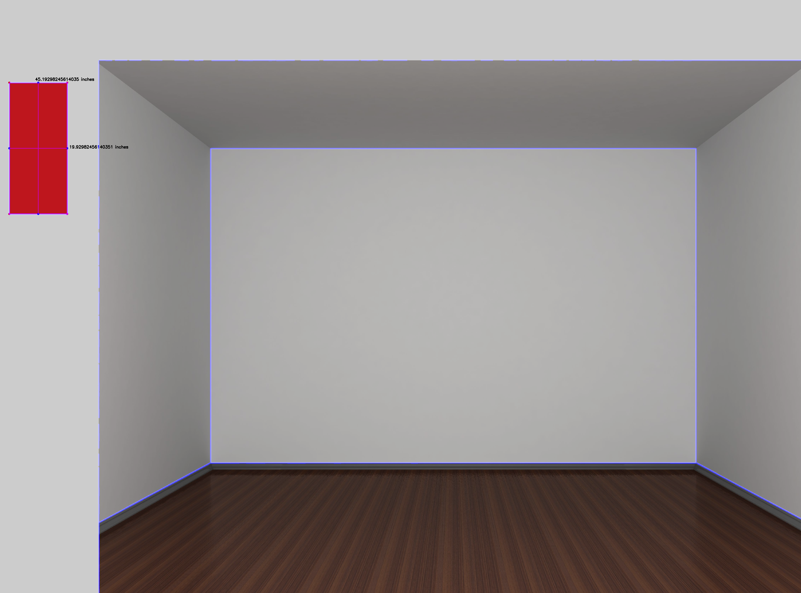
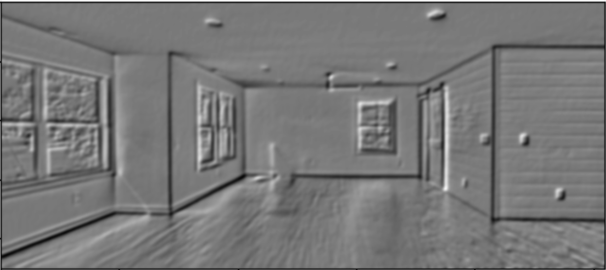
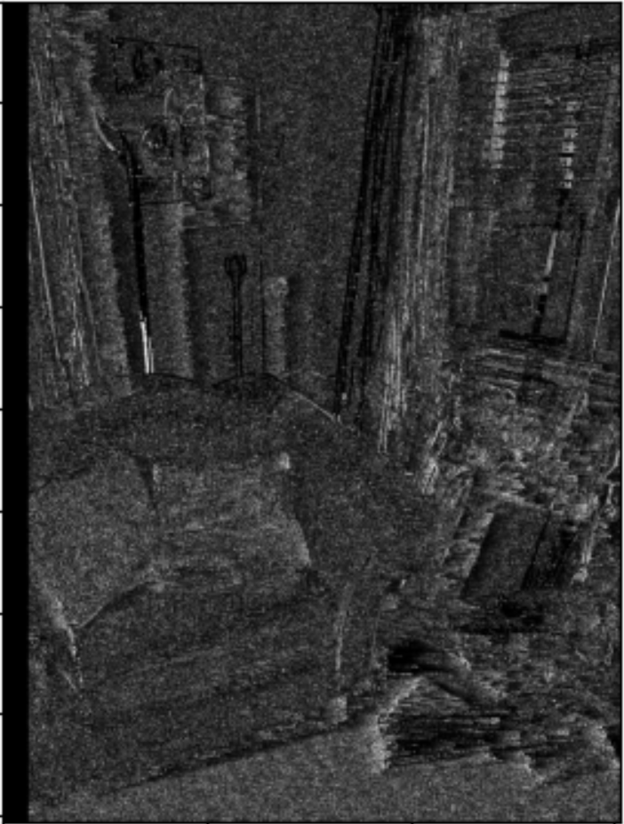
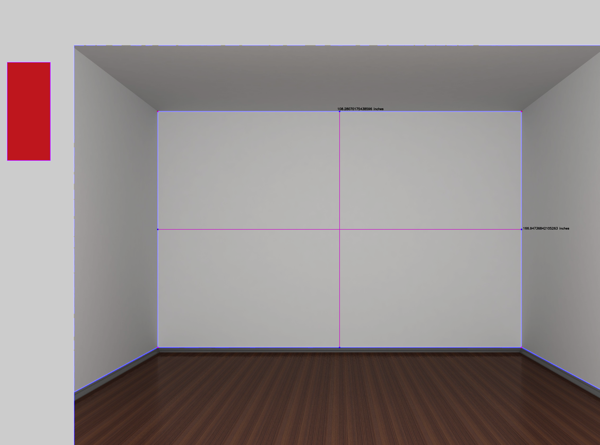
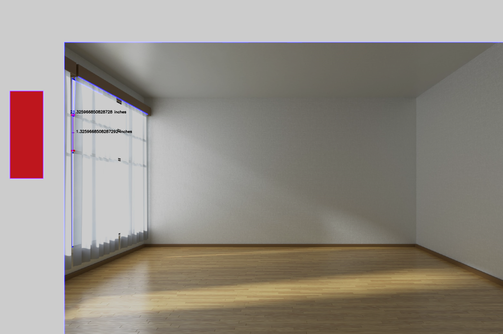
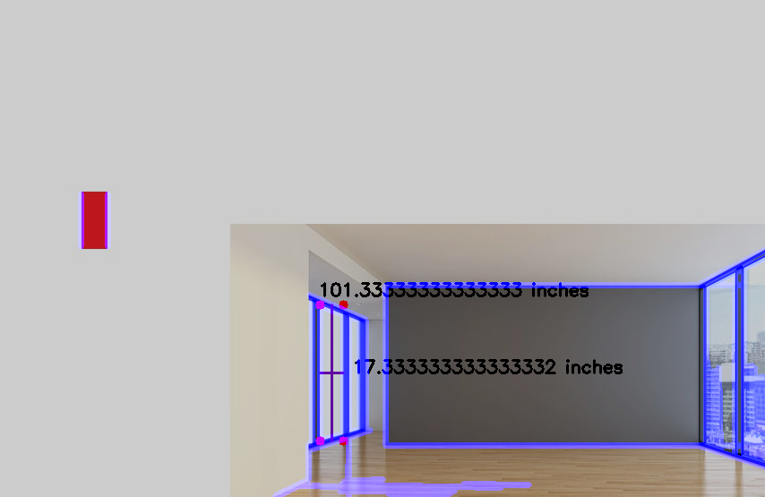
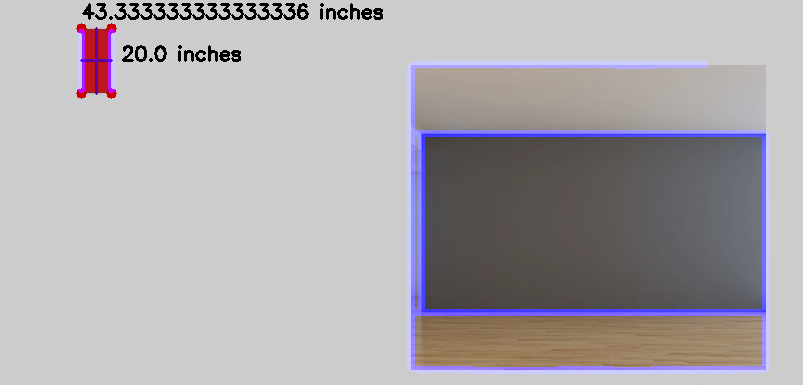

The Room Mapper
Group 2 -- Dillon Connor, Matthew Lamb, Taha RangwalaFall 2020 ECE 4554 Computer Vision: Course Project Final Report
Virginia Tech
Python Scripts: compVision_project.py, SobelandDisparity.py
Abstract
Mapping rooms, especially ones with multiple objects, is a difficult task, and not all images are the same. Through our research, we developed a program that uses edge detection and relative sizing to determine the size of a room.Example Figure
The images shown below are example figures when we run our final program. The first image takes a reference object's measurement, which is the red rectangle, and then it bases the measurements of the room off of this object. The second image below shows the measurement outline after the reference object is analyzed. Additionally, in both images, Hough Line Continuation is in use because the rooms are outlined in blue.Analyzing Reference Object

Final Output

Introduction
Gaining information about a room from a single image can be difficult. Our project, known as the Room Mapper, will take an image and a reference object, and it will use this reference object to calculate the dimensions of the room. Although there a programs that are similar to ours, our project can be used in the real estate and commercial industries. For example, a person looking for a house may use our program to get the dimensions of room if they are not able to visit a home for sale in person. This is very useful during the COVID-19 pandemic because people still need to socially distance. Overall, we hope to automate a mapping process that gives the dimensions of a room along with an outline of the walls as well.Approach
Before we came up with our final product, we researched Sobel Edge Detection and Disparity in more depth. We included a python testing script, 'SobelandDisparity.py', and we used this when were were initially testing these concepts. We decided to try to use Sobel Edge Detection because it would be useful when finding walls since they are usually vertical and horizontal. This goes with the SobelX and SobelY functions. The reason we did not end up using it in our final product is because there are too many features in images, and we did not have enough time to get rid of those features. An example image output image when doing our research for Sobel Edge Detection is shown below:

When we were researching Disparity, we were hoping it would give us some depth, but we found out that it isn't exactly for that and works best with single objects that are up close. An example image output from our research for Dispariy is shown below:

In our final product, we have used an edge detection algorithm, which is Canny Edge Detection, to filter out edges in an empty room. From there, we map out points from the edges to identify the walls, floors, and ceilings of empty rooms. The code, uses Canny Edge Detection to filter out edges in an empty room. The next step is the process is to distinguish between walls and objects that may be placed in a room. We did this through the use of a Hough Transform to extract the shapes of the walls from the image. We then used this to draw the border lines around the room. From the aforementioned edges detected by Canny Edge detection, we were able to generate a contour map of all the different outlined shapes in the image. For each contour, we found the midpoint, then used a relative image to estimate the size of the walls.
Experiments and results
We tested a variety of different rooms and input images to calibrate our program. Five room images were selected as the final contenders for our room measurement program. We determined that the parameters that affected the output images the most were our Canny Edge detection. When we adjusted the minVal and maxVal of the Canny filter, the walls were detected differently. If the maxVal was too high, components of the image like wooden floors, tile floors, and windows would be mistakenly included in both the hough transformation and the wall measurements. If the minVal was too high, the walls would not be detected in the output measurements. These parameters had to be tuned on a per-image basis to ensure that the walls, floors, and ceilings would be distinguished appropriately. We evaluated our metrics by comparing the estimated room sizes with the actual room sizes. All of which had an actual wall height between 8 feet/96 inches and 9 feet/108 inches. The "reference rectangle" was used to calibrate the walls' size and was included as the leftmost object in each input image. It is important to include this reference image, as otherwise, there would be no way to gauge how large the room is without a naive implementation. The general trend was that as more distractions in the images were introduced, such as windows as other rectangular objects were introduced, the less accurate the output measurements were, resulting in inaccurate measurements and faulty contour creation.Qualitative Results
For this section, we have taken multiple images and tested them with our final product. None of the images we tested were failures, but some of them did not work fully as intended. The images we tested produced the following outputs shown below:Test Image Output 1

Test Image Output 2

Test Image Output 3

Test Image Output 4

The images above were tested with our final product. Test Image Output 1 was a full success because Hough Line Continuation was able to determine the edges of the room, and we were able to show the measurements of the room as well. For Test Image Output 2, Hough Line Transformation did not work so well. We believe lighting affects our program; however, we were able to calculate the measurements of the window to the left. Moreover, for Test Image Output 3, Hough Line Transformation and our measurment algorithm worked prett well. There is some noise on the hardwood floor, but it is insignificant in this case. Lastly, Test Image Output 4 was able to work with Hough Line Transformation and our measurment algorithm when working with our reference object.
Conclusion
Overall, we were able to come up with a final product for this project. We learned a lot, especially about Hough Line Continuation and Canny Edge Detection. Additionally, we learned more about Sobel Edge Detection and Disparity even though we could not implement this into our final product. If we were to improve our project, we would have incorporated both Sobel Edge Detection and Disparity.References
https://en.wikipedia.org/wiki/Hough_transformhttp://fourier.eng.hmc.edu/e161/lectures/canny/node1.html
https://opencv.org/
https://en.wikipedia.org/wiki/Sobel_operator
https://robotacademy.net.au/lesson/computing-disparity/